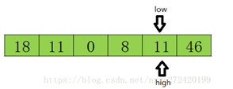

2020-08-15
93
排序算法知识点总结笔记
排序
一、排序基本概念
排序是指计算机内经常进行的一种操作，其目的是将一组“无序”的记录序列调整为“有序”的记录序列。
1.排序的特点概要
1）排序算法的稳定性：键值相等的记录排序后保持原来的顺序，则稳定，否则不稳定。
2）排序的分类：可按待排序文件规模大小分类为：内部排序—在内部进行的排序、外部排序—在外存设备上进行排序。
3）排序方法分类：插入类（包括直接插入排序等）、交换类（包括冒泡排序等）、选择类（包括简单选择排序等）、归并类（包括归并排序）、其它方法（包括基数排序）。
4）待排序记录的存储方式： 在排序的过程中通常进行下列两种操作
(1)比较两个关键字大小
(2)将记录从一个位置移动到另一个位置。
5）待排序的记录有如下三种方式：
(1)待排序的一组记录存放在地址连续的一组存储单元上。
(2)一组待排序的记录存放在静态链表上，记录之间的次序管旭由指针实现。
(3)待排序记录本身存储在一组连续地址的存储单元内，同时有另一个指示各个记录存储位置的地址向量。
6）排序算法效率的指标：
(1)算法执行时所需要的时间（最重要）
(2)执行算法所需要的附加空间。
2.直接插入排序
基本思想
将一个记录插入到已排好序的序列中，从而得到一个新的有序序列（将序列的第一个数据看成是一个有序的子序列，然后从第二个记录逐个向该有序的子序列进行有序的插入，直至整个序列有序）。
下面举一个例子
重点：使用哨兵，用于临时存储和判断数组边界。
算法：用a[0]作为哨兵
void sort(ElementType a[],int n)
{
for(i=2;i<=n;i++){
a[0] = a[i];
j = i-1;
while(a[j]>a[0]){
a[j+1] = a[j];
j--;
}
a[j+1]=a[0];
}
}
3.冒泡排序
基本思想
每次都是相邻的两个数进行比较，将较大者交换到后一个位置，对n个数的序列进行n-1次比较后最大者被交换到了最后一个位置，这样就完成了一趟冒泡排序。
下面为算法程序
vovoid Bubble_sort(ElementType a[],int n)
{
for(i=1;i<=n;i++){
flag = 0;
for(j=1;ja[j+1]){
a[j] = a[j+1];
flag = 1;
}
}
if(flag == 0){
break;
}
}
}
4.快速排序
基本思想
先从待排序序列中找一个元素作为中心点或者说界点，比如说选第一个元素。设这个中心点为y,序列中的其他元素与y进行比较，大于等于y的放在右边，小于y的放在左边。然后再对两个子序列递归的快速排序，直到每个序列只剩下一个元素。
下面举一个例子
假设最开始的基准数据为数组第一个元素23,则首先用一个临时变量去存储基准数据,即tmp=23;然后分别从数组的两端扫描数组，设两个指示标志:low指向起始位置，high指向末尾.
首先从后半部分开始，如果扫描到的值大于基准数据就让high减1,如果发现有元素比该基准数据的值小(如上图中18<=tmp)，就将high位置的值赋值给low位置 ,结果如下:
然后开始从前往后扫描,如果扫描到的值小于基准数据就让low加1,如果发现有元素大于基准数据的值(如上图46=>tmp)，就再将low位置的值赋值给high位置的值,指针移动并且数据交换后的结果如下:
然后再开始从后向前扫描,原理同上,发现上图11<=tmp,则将high位置的值赋值给low位置的值,结果如下:
然后再开始从前往后遍历,直到low=high结束循环,此时low或high的下标就是基准数据23在该数组中的正确索引位置.如下图所示：

int partition(ElementType a[],int low,int high)
{
a[0] = a[low];
tmp= a[low];
while(low < high){
while(low< high && a[high]>a[0]){
--high;
}
a[low] = a[high];
while(low< high && a[low] < a[0]){
++low;
}
a[high] = a[low];
a[low] = a[0];
}
return low;
}
空间复杂度：由于排序时递归的，执行时需要栈存放每层递归调用时参数，最好情况下空间复杂度为O（log2 n），最坏情况为O(n)。
特点：由于中心点可选任意元素，算法不稳定。适合初选记录无序，n较大的情况。
5.简答选择排序算法
基本思想
首先，从待排序列中选出最小者并交换到第一个位置；接下来，从剩下的未排序序列中选择最小者并交换到第二个位置；以此类推，对于含n个元素的序列进行n-1次选择之后就排好序了。
下面举一个例子
下面为算法程序
void sort(ElementType a[],int n)
{
for(i=1;i<=n-1;i++){
for(j=i+1;j<=n;j++){
if(a[i]>a[j]){
tmp = a[j];
a[j] = a[i];
a[i] = tmp;
}
}
}
}
6.堆排序
堆是具有以下性质的完全二叉树：每个结点的值都大于或等于其左右孩子结点的值，称为大顶堆；或者每个结点的值都小于或等于其左右孩子结点的值，称为小顶堆。
基本思想
将无序序列建成一个堆；将剩余的n-1个元素再调整成一个堆；输出堆顶元素，以最后一个元素代替堆顶元素，重复执行，直至整个堆剩一个元素。
下面举一个大顶堆例子
将无序数组构造成一个大根堆（升序用大根堆，降序就用小根堆）,假设存在以下数组
主要思路：第一次保证0~0位置大根堆结构（废话），第二次保证0~1位置大根堆结构，第三次保证0~2位置大根堆结构...直到保证0~n-1位置大根堆结构（每次新插入的数据都与其父结点进行比较，如果插入的数比父结点大，则与父结点交换，否则一直向上交换，到小于等于父结点，或者来到了顶端）。
（1）插入6

（2）插入8
（3）插入5
（4）插入7
此时就得了一个大顶堆；下面将顶端的数与最后一位数交换，然后将剩余的数再构造成一个大根堆，进行迭代；
此时最大数8已经来到末尾，则固定不动，后面只需要对顶端的数据进行操作即可，拿顶端的数与其左右孩子较大的数进行比较，如果顶端的数大于其左右孩子较大的数，则停止，如果顶端的数小于其左右孩子较大的数，则交换，然后继续与下面的孩子进行比较。
剩余的数开始构造大根堆 ，然后顶端数与末尾数交换，固定最大值再构造大根堆，重复执行上面的操作，最终会得到有序数组。

时间复杂度：O(nlog 2n) 空间复杂度：O(1)
7.归并排序法
将两个或两个以上的有序表组合成一个新有序表基本思想
初始化无序序列看成n个有序子序列，每个子序列长度为1;两两合并，得到n/2个长度为2或1的有序子序列;重复步骤2直至得到一个长度为n的有序序列为止
下面举一个2-路归并排序过程
以数组A[8] = {6, 3, 2, 7, 1, 5, 4, 8}为例，归并排序自顶向下的排序过程如下图所示：
8.基数排序
基本思想
待排序序列中，每个元素有d个数值组成，每个数值的可能取rd个值，从最低为开始，根据每个数值的不同将待排序列中的元素分配到rd个队列中，然后再收集，重复d次，完成排列。
下面举一个例子
通过基数排序对数组{53, 3, 542, 748, 14, 214, 154, 63, 616}，它的示意图如下：
三、查找算法
1.顺序查找方法
顺序查找方法（Selection sort）最基本的查找技术，过程：从表中的第一个（或最后一个）记录开始，逐个进行记录的 关键字和给定值比较， 若某个记录的关键字和给定值相等，则查找成功，找到所查的记录； 如果直到最后一个（或第一个）记录，其关键字和给定值比较都不等时， 则表示没有查到记录，查找不成功。
顺序查找算法：
#从 a 列表中查找值 v,如果找到则返回第一次出现的下标，否则返回-1
def sequenceSearch(a,v):
for i in range(len(a)):
if a[i] == v:
return i
return -1
if __name__ == '__main__':
a=[11,22,33,44,55,11]
v=22
index=sequenceSearch(a,v)
print('查找到的索引为：',index)2.二分查找方法
二分查找又称折半查找，优点是比较次数少，查找速度快，平均性能好；其缺点是要求 待查表为有序表，且插入删除困难。因此，折半查找方 法适用于不经常变动而查找频繁的有 序列表。首先，假设表中元素是按升序排列，将表中间位置记录的关键字与查找关键字比较， 如果两者 相等，则查找成功；否则利用中间位置记录将表分成前、后 fp 两个子表，如果中 间位置记录的关键字大于查找关键字，则进一步查找前一 子表，否则进一步查找后一子表。 重复以上过程，直到找到满足条件的记录，使查找成功，或直到子表不存在为止，此时查找 不成功。
二分法查找法（非递归实现）
def binary_search(alist, item):
first = 0
last = len(alist) - 1
while first <= last:
midpoint = (first + last) // 2
if alist[midpoint] == item:
return True
elif item < alist[midpoint]:
last = midpoint - 1
else:
first = midpoint + 1
return False
testlist = [0, 1, 2, 8, 13, 17, 19, 32, 42 ]
print(binary_search(testlist, 12))
print(binary_search(testlist, 13))二分法查找法（递归实现）
def binary_search(alist, item):
if len(alist) == 0:
return False
else:
midpoint = len(alist)//2
if alist[midpoint]==item:
return True
else:
if alist[midpoint]>item:
return binary_search(alist[:midpoint],item)
else:
return binary_search(alist[midpoint+1:],item)
testlist = [0, 1, 2, 8, 13, 17, 19, 32, 42,]
print(binary_search(testlist, 3))
print(binary_search(testlist, 13))
Comments
回复